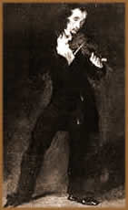

Quando ele passava por uma cidade
o caos se instalava. Não só pelos fãs, principalmente
jovens histéricas desesperadamente apaixonadas, mas também
pelos outros músicos, que acorriam de muito longe apenas
para ouvi-lo, observando atentamente cada gesto de seus dedos
sobre as cordas do instrumento. Era muito fácil reconhecê-los:
durante o espetáculo, enquanto a multidão chorava
e gritava em delírio, eles ficavam muito quietos, pálidos,
com os olhos cravados no palco, a boca crispada, no desespero
sem fim daqueles que sabem que nunca serão assim tão
bons. Ninguém podia competir com ele, mas o pior era a
atitude, inconveniente e desaforada. Tinha vindo de uma família
muito pobre e acumulara uma enorme fortuna com seu talento: podia
muito bem agir como quisesse, permitir-se todos os excessos. Em
dois anos e meio, por exemplo, percorreu 40 cidades da Europa,
que caíram aos seus pés.
Naturalmente, como todo gênio, tinha inúmeros
inimigos e circulavam a seu respeito os boatos mais sinistros,
boatos que ele nunca fez o menor esforço para desmentir.
Acima de tudo, era completamente indiferente às opiniões
da sociedade, que o adorava e temia ao mesmo tempo. Diziam que
o seu talento muito acima do normal era fruto de um pacto com
o Diabo, o que só fez aumentar o seu carisma. Diziam que
as cordas com que tocava eram muito especiais, feitas das entranhas
de seu mestre. Depois teria feito um outro jogo com as de uma
amante que se matara especialmente para isso. No entanto, a lenda
acrescenta que apenas uma pessoa que o amasse e que cedesse espontaneamente
sua vida poderia tornar-se parte de seu instrumento. O certo é
que ele produzia sons que ninguém tinha ouvido antes fora
de um pesadelo.
Quem assistiu as suas apresentações,
refere que, ao seu comando, a sala parecia encher-se de espectros,
almas em tormento, uivando como a tempestade. Quando tocava podia-se
ouvir o choro das crianças, o riso dos demônios,
o grito arrepiante de um universo em agonia. Grupos religiosos
protestavam quando ele chegava a uma cidade, acusando-o de ter
pacto com o Diabo, mas ele apenas sorria e chegou a compor uma
melodia perturbadora citando-o explicitamente. Seus trajes estranhos,
seu comportamento silencioso e polido contrastando com a fúria
no palco, onde se transformava em uma fera, com os olhos em chamas
e um sorriso maligno, tudo contribuía para essa fama que
o tornou uma lenda inesquecível.
Essa
história aconteceu há uns duzentos anos atrás,
principalmente entre 1828 a 1831, período máximo
da glória de Nicolo Paganini, compositor e o maior
violinista de todos os tempos. A lenda sobre o encordoamento tem
origem no fato de que as tripas de carneiro que compunham as cordas
do violino poderiam, de fato, ser substituídas por um jogo
humano, ganhando assim uma sonoridade sobrenatural. A estranha
personalidade de Paganini contribuiu bastante para aumentar as
lendas. Diz-se que, a partir dos 30 anos, nunca mais ensaiou e
que vivia cercado por uma nuvem vigilante de aprendizes, discípulos
e mesmo adversários, sempre em busca dos segredos de sua
técnica. Os relatos de seus espetáculos fariam empalidecer
de inveja os Beatles ou qualquer grupo de rock até hoje,
assemelhando-se mais a uma experiência próxima do
êxtase coletivo ou do pavor absoluto. Choro convulsivo apenas
rompia o silêncio absoluto quando ele queria e, quando queria
o contrário, fazia corar as donzelas com acordes muito
próximos da agonia do orgasmo e todos sentiam uma fúria
incontrolável tomar conta de sua alma. Em quase todas as
cidades em que se apresentava saía dos teatros carregado
em triunfo pelas ruas, naturalmente até alguma casa mal-afamada
na qual o ópio, o vinho e o haxixe pontuavam uma orgia
incendiária e minuciosa.
Como podemos perceber desse relato que oscila entre
o verídico e o lendário, os poderes da música
provocam efeitos muitas vezes imprevisíveis, pelo fato
de que os acordes ressoam no coração do ouvinte,
tangendo uma corda sutil que afina os nossos estados da alma.
Uma melodia pode ser tranqüila e comovente
e ainda assim ser maligna, por predispor a um estado, por exemplo,
de profundo desalento e melancolia. A banda Siouxsie and The Banshees,
adepta do vodu haitiano, é uma ilustração
muito clara desse princípio. Por outro lado, uma música
erudita, de um autor clássico, também pode ter uma
influência nefasta, ao trazer referenciais emocionais arcaicos,
obsoletos, naturalmente quando a pessoa não se identifica
com ela, ouvindo-a apenas por pedantismo ou mero hábito,
porque lhe disseram que era isso o de que deveria gostar.
Acima de tudo, é preciso estar consciente
de que, preferências à parte, cada um de nós
tem uma freqüência vibratória emocional única,
específica, e que muda a cada instante. Assim, o importante
é utilizarmos a energia maravilhosa das harmonias musicais
para expressarmos livremente as nossas emoções,
seja ouvindo ou tocando algum instrumento. Não é
por outra razão que a música sempre faz parte dos
rituais religiosos, seja em forma de canto, percussão ou
outras. Nas igrejas Gospel, por exemplo, muitas pessoas sem fé
ou de outra fé vão aos cultos apenas para ouvir
os corais, de poderosa musicalidade. Nas religiões afro,
por outro lado, o ritmo febril dos tambores e atabaques tem derrubado
mais de um cético e feito mais de um ateu cair em transe
possuído por alguma divindade.
Extraído
do site Ordem Natural
Adaptado por Spectrum